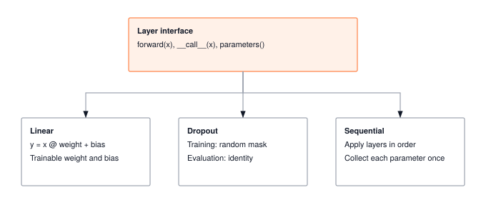

Module 03: Layers
A layer is a function with weights. Three stacked is an MLP; ninety-six is GPT-3. The interface discipline, every layer exposing the same forward() and parameters(), is what lets the optimizer find your weights, autograd walk your graph, and a future compiler fuse your kernels.
FOUNDATION TIER | Difficulty: ●●○○ | Time: 5-7 hours | Prerequisites: 01, 02
Prerequisites: Modules 01 and 02 means you have built:
- Tensor class with arithmetic, broadcasting, matrix multiplication, and shape manipulation
- Activation functions (ReLU, Sigmoid, Tanh, Softmax) for introducing non-linearity
- Understanding of element-wise operations and reductions
If you can multiply tensors, apply activations, and reason about shape transformations, you’re ready.
🎧 Audio Overview
Listen to an AI-generated overview.
Overview
A layer is a function with weights. Stack three of them and you have a multi-layer perceptron; stack ninety-six and you have GPT-3. The discipline that makes such composition possible — every layer exposing the same forward() and parameters() interface — is what you build in this module.
You’ll implement four pieces: a Layer base class that fixes the interface, a Linear layer that applies the learned transformation y = xW + b, a Dropout layer that prevents overfitting by randomly zeroing activations, and a Sequential container that chains layers into networks. Together they’re the smallest set of abstractions that lets you write model = Sequential(Linear(784, 256), ReLU(), Linear(256, 10)) and have it just work.
The payoff is parameters(). Once every layer hands its weights to a single list, optimizers (Module 07) and autograd (Module 06) can update them without caring what’s inside. PyTorch’s nn.Module follows the exact same contract — you’re building the real abstraction, not a toy version of it.
Learning Objectives
- Implement Linear layers with proper weight initialization and parameter management for gradient-based training
- Master the mathematical operation
y = xW + band understand how parameter counts scale with layer dimensions - Understand memory usage patterns (parameter memory vs activation memory) and computational complexity of matrix operations
- Connect your implementation to production PyTorch patterns, including
nn.Linear,nn.Dropout, and parameter tracking
What You’ll Build

forward() and parameters() from a single Layer base — Sequential adds composition by chaining the others into networks.
Implementation roadmap:
Table 1 lays out the implementation in order, one part at a time.
| Part | What You’ll Implement | Key Concept |
|---|---|---|
| 1 | Layer base class with forward(), __call__(), parameters() |
Consistent interface for all layers |
| 2 | Linear layer with proper initialization |
Learned transformation y = xW + b |
| 3 | Dropout with training/inference modes |
Regularization through random masking |
| 4 | Sequential container for layer composition |
Chaining layers together |
The pattern you’ll enable:
# Building a multi-layer network
layer1 = Linear(784, 256)
activation = ReLU()
dropout = Dropout(0.5)
layer2 = Linear(256, 10)
# Manual composition for explicit data flow
x = layer1(x)
x = activation(x)
x = dropout(x, training=True)
output = layer2(x)What You’re NOT Building (Yet)
To keep this module focused, you will not implement:
- Automatic gradient computation (autograd is a later module)
- Parameter optimization (optimizers are a later module)
- Hundreds of layer types (PyTorch has Conv2d, LSTM, Attention - you’ll build Linear and Dropout)
- Automatic training/eval mode switching (PyTorch’s
model.train()- you’ll manually passtrainingflag)
You are building the core building blocks. Training loops and optimizers come later.
API Reference
A quick reference for the layer classes you’re about to build — keep it open while you implement.
Layer Base Class
Layer()Base class providing consistent interface for all neural network layers. All layers inherit from this and implement forward() and parameters().
Table 2 lists the methods every subclass inherits.
| Method | Signature | Description |
|---|---|---|
forward |
forward(x) -> Tensor |
Compute layer output (must override) |
__call__ |
__call__(x) -> Tensor |
Makes layer callable like a function |
parameters |
parameters() -> List[Tensor] |
Returns list of trainable parameters |
Linear Layer
Linear(in_features, out_features, bias=True)Linear (fully connected) layer implementing y = xW + b.
Parameters: - in_features: Number of input features - out_features: Number of output features - bias: Whether to include bias term (default: True)
Attributes: - weight: Tensor of shape (in_features, out_features) (gradient tracking enabled later by autograd) - bias: Tensor of shape (out_features,) or None (gradient tracking enabled later by autograd)
Table 3 lists the methods on this class.
| Method | Signature | Description |
|---|---|---|
forward |
forward(x) -> Tensor |
Applies linear transformation y = xW + b |
parameters |
parameters() -> List[Tensor] |
Returns [weight, bias] or [weight] |
Dropout Layer
Dropout(p=0.5)Dropout layer for regularization. During training, randomly zeros elements with probability p and scales survivors by 1/(1-p). During inference, passes input unchanged.
Parameters: - p: Probability of zeroing each element (0.0 = no dropout, 1.0 = zero everything)
Table 4 lists the methods on this class.
| Method | Signature | Description |
|---|---|---|
forward |
forward(x, training=True) -> Tensor |
Applies dropout during training, passthrough during inference |
parameters |
parameters() -> List[Tensor] |
Returns empty list (no trainable parameters) |
Sequential Container
Sequential(*layers)Container that chains layers together sequentially. Provides convenient way to compose multiple layers.
Table 5 lists the methods on this class.
| Method | Signature | Description |
|---|---|---|
forward |
forward(x) -> Tensor |
Forward pass through all layers in order |
parameters |
parameters() -> List[Tensor] |
Collects all parameters from all layers |
Core Concepts
Five ideas carry the weight of this module: the linear transformation, weight initialization, parameter tracking, the forward-pass call mechanic, and composition. They apply to every ML framework. TinyTorch is the lab; the concepts are what travel.
The Linear Transformation
Linear layers implement the mathematical operation y = xW + b, where x is your input, W is a weight matrix you learn, b is a bias vector you learn, and y is your output. This simple formula is the foundation of neural networks.
Think of the weight matrix as a feature detector. Each column of W learns to recognize a particular pattern in the input. When you multiply input x by W, you’re asking: “How much of each learned pattern appears in this input?” The bias b shifts the output, providing a baseline independent of the input.
Consider recognizing handwritten digits. A flattened 28×28 image has 784 pixels. A Linear layer transforming 784 features to 10 classes creates a weight matrix of shape (784, 10). Each of the 10 columns learns which combination of those 784 pixels indicates a particular digit. The network discovers these patterns through training.
Here’s how your implementation performs this transformation:
def forward(self, x):
"""Forward pass through linear layer."""
# Linear transformation: y = xW
output = x.matmul(self.weight)
# Add bias if present
if self.bias is not None:
output = output + self.bias
return outputThe elegance is in the simplicity, but beneath that simplicity lies a massive computational engine. This matrix multiplication—formally known as GEMM (General Matrix Multiply)—handles all the feature combinations in one operation. Unlike memory-bound activation functions, GEMM has incredibly high arithmetic intensity (the ratio of math operations to memory bytes accessed). Because each fetched weight and input is reused multiple times across the multiplication, the processor can spend its time crunching numbers rather than waiting for RAM.
However, realizing this theoretical performance requires moving beyond textbook linear algebra. If we just wrote a naive nested loop for matrix multiplication, the processor would spend most of its time stalling for memory fetches, completely wasting its computational potential. Bridging this gap requires specialized software-hardware co-design.
To maximize the benefits of high arithmetic intensity, modern hardware relies on cache tiling. Instead of naively multiplying rows and columns (which thrashes the CPU/GPU cache), hardware libraries break the matrices into smaller “tiles” that fit perfectly into ultra-fast L1/L2 caches. The math happens on these tiles at blazing speeds before moving to the next block, ensuring the execution remains compute-bound rather than memory-bound.
After the heavy lifting of GEMM is done, broadcasting efficiently handles adding the bias vector to every sample in the batch. This single matmul method essentially powers every linear transformation in modern neural networks.
Weight Initialization
How you initialize weights determines whether your network can learn at all. Initialize too small and gradients vanish, making learning impossibly slow. Initialize too large and gradients explode, making training unstable. The sweet spot ensures stable gradient flow through the network.
We use LeCun-style initialization, which scales weights by sqrt(1/in_features). This keeps the variance of activations roughly constant as data flows through layers, preventing vanishing or exploding gradients. (True Xavier/Glorot uses sqrt(2/(fan_in+fan_out)) which also considers output dimensions, but the simpler LeCun formula works well in practice.)
Here’s your initialization code:
The code in ?@lst-03-layers-linear-init makes this concrete.
def __init__(self, in_features, out_features, bias=True):
"""Initialize linear layer with proper weight initialization."""
self.in_features = in_features
self.out_features = out_features
# LeCun-style initialization for stable gradients
scale = np.sqrt(INIT_SCALE_FACTOR / in_features)
weight_data = np.random.randn(in_features, out_features) * scale
self.weight = Tensor(weight_data)
# Initialize bias to zeros or None
if bias:
bias_data = np.zeros(out_features)
self.bias = Tensor(bias_data)
else:
self.bias = None: Listing 3.1 — Linear layer constructor with LeCun-style weight initialization and zero bias. {#lst-03-layers-linear-init}
Weights and biases are created as plain Tensors. When autograd is enabled later, it monkey-patches the Tensor class to support requires_grad, at which point you can set layer.weight.requires_grad = True for parameters that need gradients. Bias starts at zero because the weight initialization already handles the scale, and zero is a neutral starting point for per-class adjustments.
For Linear(1000, 10), the scale is sqrt(1/1000) ≈ 0.032. For Linear(10, 1000), the scale is sqrt(1/10) ≈ 0.316. Layers with more inputs get smaller initial weights because each input contributes to the output, and you want their combined effect to remain stable.
Parameter Management
Parameters are tensors that need gradients and optimizer updates. Your Linear layer manages two parameters: weights and biases. The parameters() method collects them into a list that optimizers can iterate over.
def parameters(self):
"""Return list of trainable parameters."""
params = [self.weight]
if self.bias is not None:
params.append(self.bias)
return paramsThis simple method enables powerful workflows. When you build a multi-layer network, you can collect all parameters from all layers and pass them to an optimizer:
layer1 = Linear(784, 256)
layer2 = Linear(256, 10)
all_params = layer1.parameters() + layer2.parameters()
# Pass all_params to optimizer.step() during trainingEach Linear layer independently manages its own parameters. The Sequential container extends this pattern by collecting parameters from all its contained layers, enabling hierarchical composition.
Forward Pass Mechanics
The forward pass transforms input data through the layer’s computation. Every layer implements forward(), and the base class provides __call__() to make layers callable like functions. This matches PyTorch’s design exactly.
def __call__(self, x, *args, **kwargs):
"""Allow layer to be called like a function."""
return self.forward(x, *args, **kwargs)This lets you write output = layer(input) instead of output = layer.forward(input). The difference looks cosmetic, but __call__ is the seam where a real framework slips in hooks, logging, profiling, or training/eval mode switching — none of which forward() has to know about.
For Dropout, the forward pass depends on whether you’re training or performing inference:
The code in ?@lst-03-layers-dropout-forward makes this concrete.
def forward(self, x, training=True):
"""Forward pass through dropout layer."""
if not training or self.p == DROPOUT_MIN_PROB:
# During inference or no dropout, pass through unchanged
return x
if self.p == DROPOUT_MAX_PROB:
# Drop everything (preserve requires_grad for gradient flow)
return Tensor(np.zeros_like(x.data), requires_grad=x.requires_grad)
# During training, apply dropout
keep_prob = 1.0 - self.p
# Create random mask: True where we keep elements
mask = np.random.random(x.data.shape) < keep_prob
# Apply mask and scale using Tensor operations to preserve gradients
mask_tensor = Tensor(mask.astype(np.float32), requires_grad=False)
scale = Tensor(np.array(1.0 / keep_prob), requires_grad=False)
# Use Tensor operations: x * mask * scale
output = x * mask_tensor * scale
return output: Listing 3.2 — Dropout forward pass with inverted scaling 1/(1-p) to preserve expected magnitude. {#lst-03-layers-dropout-forward}
The key insight is the scaling factor 1/(1-p). If you drop 50% of neurons, the survivors need to be scaled by 2.0 to maintain the same expected value. This ensures that during inference (when no dropout is applied), the output magnitudes match training expectations.
Layer Composition
Neural networks are built by chaining layers together. Data flows through each layer in sequence, with each transformation building on the previous one. Your Sequential container captures this pattern:
The code in ?@lst-03-layers-sequential makes this concrete.
class Sequential:
"""Container that chains layers together sequentially."""
def __init__(self, *layers):
"""Initialize with layers to chain together."""
if len(layers) == 1 and isinstance(layers[0], (list, tuple)):
self.layers = list(layers[0])
else:
self.layers = list(layers)
def forward(self, x):
"""Forward pass through all layers sequentially."""
for layer in self.layers:
x = layer.forward(x)
return x
def parameters(self):
"""Collect all parameters from all layers."""
params = []
for layer in self.layers:
params.extend(layer.parameters())
return params: Listing 3.3 — Sequential container chaining forward passes and flattening per-layer parameters. {#lst-03-layers-sequential}
Twelve lines of container code unlock the full vocabulary of network design. A 3-layer classifier is just three Linear layers with activations and dropout between them:
model = Sequential(
Linear(784, 256), ReLU(), Dropout(0.5),
Linear(256, 128), ReLU(), Dropout(0.3),
Linear(128, 10)
)forward() chains the computations; parameters() flattens the per-layer lists into one. That’s the entire mechanism — every model in this book, from a perceptron to a transformer, reduces to those two methods on a container.
Memory and Computational Complexity
Memory and FLOPs aren’t optional reading — they’re how you predict whether a model fits in RAM and whether a forward pass takes a millisecond or a minute. Linear layers dominate both for any fully connected architecture.
Parameter memory for a Linear layer is straightforward: in_features × out_features × 4 bytes for weights, plus out_features × 4 bytes for bias (assuming float32). For Linear(784, 256):
Weights: 784 × 256 × 4 = 802,816 bytes ≈ 784 KB
Bias: 256 × 4 = 1,024 bytes ≈ 1 KB
Total: ≈ 785 KBActivation memory depends on batch size. For batch size 32 and the same layer:
Input: 32 × 784 × 4 = 100,352 bytes ≈ 98 KB
Output: 32 × 256 × 4 = 32,768 bytes ≈ 32 KBThe computational cost of the forward pass is dominated by matrix multiplication. For input shape (batch, in_features) and weight shape (in_features, out_features), the operation requires batch × in_features × out_features multiplications and the same number of additions. Bias addition is just batch × out_features additions, negligible compared to matrix multiplication.
Table 6 summarises the complexity and speed of each stage.
| Operation | Complexity | Memory |
|---|---|---|
| Linear forward | O(batch × in × out) | O(batch × (in + out)) activations |
| Dropout forward | O(batch × features) | O(batch × features) mask |
| Parameter storage | O(in × out) | O(in × out) weights |
For a 3-layer network (784→256→128→10) with batch size 32:
Layer 1: 32 × 784 × 256 = 6,422,528 FLOPs
Layer 2: 32 × 256 × 128 = 1,048,576 FLOPs
Layer 3: 32 × 128 × 10 = 40,960 FLOPs
Total: ≈ 7.5 million FLOPs per forward passThe first layer dominates because it has the largest input dimension. Production networks often shrink dimensions early to save computation in deeper layers.
Common Errors
These are the errors you’ll encounter most often when working with layers. Understanding why they happen will save you hours of debugging, both in this module and throughout your ML career.
Shape Mismatch in Layer Composition
Error: ValueError: Cannot perform matrix multiplication: (32, 128) @ (256, 10). Inner dimensions must match: 128 ≠ 256
This happens when you chain layers with incompatible dimensions. If layer1 outputs 128 features but layer2 expects 256 input features, the matrix multiplication in layer2 fails.
Fix: Ensure output features of one layer match input features of the next:
layer1 = Linear(784, 128) # Outputs 128 features
layer2 = Linear(128, 10) # Expects 128 input features ✓Dropout in Inference Mode
Error: Test accuracy is much lower than training accuracy, but loss curves suggest good learning
Cause: You’re applying dropout during inference. Dropout should only zero elements during training. During inference, all neurons must be active.
Fix: Always pass training=False during evaluation:
# Training
output = dropout(x, training=True)
# Evaluation
output = dropout(x, training=False)Missing Parameters
Error: Optimizer has no parameters to update, or parameter count is wrong
Cause: Your parameters() method doesn’t return all trainable tensors, or you forgot to set requires_grad=True.
Fix: Verify all tensors with requires_grad=True are returned:
def parameters(self):
params = [self.weight]
if self.bias is not None:
params.append(self.bias)
return params # Must include all trainable tensorsInitialization Scale
Error: Loss becomes NaN within a few iterations, or gradients vanish immediately
Cause: Weights initialized too large (exploding gradients) or too small (vanishing gradients).
Fix: Use proper initialization scaling:
scale = np.sqrt(1.0 / in_features) # LeCun-style, not just random()!
weight_data = np.random.randn(in_features, out_features) * scaleProduction Context
Your Implementation vs. PyTorch
Your TinyTorch layers and PyTorch’s nn.Linear and nn.Dropout share the same conceptual design. The differences are in implementation details: PyTorch uses C++ for speed, supports GPU acceleration, and provides hundreds of specialized layer types. But the core abstractions are identical.
Table 7 places your implementation side by side with the production reference for direct comparison.
| Feature | Your Implementation | PyTorch |
|---|---|---|
| Backend | NumPy (Python) | C++/CUDA |
| Initialization | LeCun-style manual | Multiple schemes (init.xavier_uniform_, init.kaiming_normal_) |
| Parameter Management | Manual parameters() list |
nn.Module base class with auto-registration |
| Training Mode | Manual training flag |
model.train() / model.eval() state |
| Layer Types | Linear, Dropout | 100+ layer types (Conv, LSTM, Attention, etc.) |
| GPU Support | ✗ CPU only | ✓ CUDA, Metal, ROCm |
Code Comparison
The following comparison shows equivalent layer operations in TinyTorch and PyTorch. Notice how closely the APIs mirror each other.
from tinytorch.core.layers import Linear, Dropout, Sequential
from tinytorch.core.activations import ReLU
# Build layers
layer1 = Linear(784, 256)
activation = ReLU()
dropout = Dropout(0.5)
layer2 = Linear(256, 10)
# Manual composition
x = layer1(x)
x = activation(x)
x = dropout(x, training=True)
output = layer2(x)
# Or use Sequential
model = Sequential(
Linear(784, 256), ReLU(), Dropout(0.5),
Linear(256, 10)
)
output = model(x)
# Collect parameters
params = model.parameters()import torch
import torch.nn as nn
# Build layers
layer1 = nn.Linear(784, 256)
activation = nn.ReLU()
dropout = nn.Dropout(0.5)
layer2 = nn.Linear(256, 10)
# Manual composition
x = layer1(x)
x = activation(x)
x = dropout(x) # Automatically uses model.training state
output = layer2(x)
# Or use Sequential
model = nn.Sequential(
nn.Linear(784, 256), nn.ReLU(), nn.Dropout(0.5),
nn.Linear(256, 10)
)
output = model(x)
# Collect parameters
params = list(model.parameters())Let’s walk through each difference:
- Line 1-2 (Import): Both frameworks provide layers in a dedicated module. TinyTorch uses
tinytorch.core.layers; PyTorch usestorch.nn. - Line 4-7 (Layer Creation): Identical API. Both use
Linear(in_features, out_features)andDropout(p). - Line 9-13 (Manual Composition): TinyTorch requires explicit
training=Trueflag for Dropout; PyTorch uses global model state (model.train()). - Line 15-19 (Sequential): Identical pattern for composing layers into a container.
- Line 22 (Parameters): Both use
.parameters()method to collect all trainable tensors. PyTorch returns a generator; TinyTorch returns a list.
Layer initialization API, forward pass mechanics, and parameter collection patterns. When you debug PyTorch shape errors or parameter counts, you’ll understand exactly what’s happening because you built the same abstractions.
Why Layers Matter at Scale
To appreciate why layer design matters, consider the scale of modern ML systems:
- GPT-3: 175 billion parameters across 96 Linear layers (each layer transforming 12,288 features) = 350 GB of parameter memory
- ResNet-50: 25.5 million parameters with 50 convolutional and linear layers = 100 MB of parameter memory
- BERT-Base: 110 million parameters with 12 transformer blocks (each containing multiple Linear layers) = 440 MB of parameter memory
Every Linear layer in these architectures runs the same y = xW + b you just wrote. Parameter counts, memory scaling, and initialization aren’t academic concerns — they’re the first three things an engineer profiles when a model won’t fit, won’t converge, or won’t run fast enough. When GPT-3 misbehaves, the people fixing it are debugging the same abstractions you built today.
Check Your Understanding
Before moving on, verify you can articulate each of the following:
If any of these feels fuzzy, revisit Core Concepts (The Linear Transformation, Weight Initialization, Parameter Management, Memory and Computational Complexity) before moving on.
The collapsible Q&A below works through each of these quantitatively.
Q1: Parameter Scaling
A Linear layer has in_features=784 and out_features=256. How many parameters does it have? If you double out_features to 512, how many parameters now?
Original: 784 × 256 + 256 = 200,960 parameters
Doubled: 784 × 512 + 512 = 401,920 parameters
Doubling out_features roughly doubles the parameter count because weights dominate (200,704 vs 401,408 for weights alone). Parameter count scales linearly with layer width.
Memory: 200,960 × 4 = 803,840 bytes ≈ 785 KB (original) vs 401,920 × 4 = 1,607,680 bytes ≈ 1.53 MB (doubled).
Q2: Multi-layer Memory
A 3-layer network has architecture 784→256→128→10. Calculate total parameter count and memory usage (assume float32).
Layer 1: 784 × 256 + 256 = 200,960 parameters Layer 2: 256 × 128 + 128 = 32,896 parameters Layer 3: 128 × 10 + 10 = 1,290 parameters
Total: 235,146 parameters
Memory: 235,146 × 4 = 940,584 bytes ≈ 919 KB
That’s parameter memory only. Add activation memory for batch processing: at batch size 32, you also hold intermediate tensors at each layer (32×784, 32×256, 32×128, 32×10 ≈ 147 KB more).
Q3: Dropout Scaling
Why do we scale surviving values by 1/(1-p) during training? What happens if we don’t scale?
With scaling: Expected value of output matches input. If p=0.5, half the neurons survive and are scaled by 2.0, so E[output] = 0.5 × 0 + 0.5 × 2x = x.
Without scaling: Expected value is halved. E[output] = 0.5 × 0 + 0.5 × x = 0.5x. During inference (no dropout), output would be x, creating a mismatch.
Result: Network sees different magnitude activations during training vs inference, leading to poor test performance. Scaling ensures consistent magnitudes.
Q4: Computational Bottleneck
For a Linear layer’s forward pass y = xW + b, which operation dominates: matrix multiply or bias addition?
Matrix multiply: O(batch × in_features × out_features) operations Bias addition: O(batch × out_features) operations
For Linear(784, 256) with batch size 32:
- Matmul: 32 × 784 × 256 = 6,422,528 operations
- Bias: 32 × 256 = 8,192 operations
Matrix multiply dominates by ~784×. That ratio is why every serious framework leans on optimized BLAS kernels (MKL, OpenBLAS) on CPU and cuBLAS on GPU — speeding up matmul speeds up the whole network.
Q5: Initialization Impact
What happens if you initialize all weights to zero? To the same non-zero value?
All zeros: Network can’t learn. All neurons compute identical outputs, receive identical gradients, and update identically. Symmetry is never broken. Training is stuck.
Same non-zero value (e.g., all 1s): Same problem - symmetry. All neurons remain identical throughout training. You need randomness to break symmetry.
Proper initialization: Random values scaled by sqrt(1/in_features) break symmetry AND maintain stable gradient variance. This is why proper initialization is essential for learning.
Q6: Batch Size vs Throughput
From your timing analysis, batch size 32 processes 10,000 samples/sec, while batch size 1 processes 800 samples/sec. Why is batching faster?
Overhead amortization: Setting up matrix operations has fixed cost per call. With batch=1, you pay this cost for every sample. With batch=32, you pay once for 32 samples.
Vectorization: Modern CPUs/GPUs process vectors efficiently. Matrix operations on larger matrices utilize SIMD instructions and better cache locality.
Throughput calculation: - Batch=1: 800 samples/sec means each forward pass takes ~1.25ms - Batch=32: 10,000 samples/sec means each forward pass takes ~3.2ms for 32 samples = 0.1ms per sample
Batching achieves 12.5x better per-sample performance by better utilizing hardware.
Trade-off: Larger batches increase latency (time to process one sample) but dramatically improve throughput (samples processed per second).
Key Takeaways
- A layer is a function with weights, plus a parameter list: the minimal contract —
forward(x)andparameters()— is all autograd and optimizers ever need from any layer, fromLinearto transformer blocks. y = xW + bis the workhorse: Linear layers dominate both parameter count and FLOPs in fully-connected stacks; every scaling law ultimately argues about how manyLinearmultiplies fit on the hardware.- Initialization is not a detail: LeCun-style
sqrt(1/fan_in)scaling keeps activation variance roughly constant through depth. Zero or uniform init freezes symmetry and blocks learning outright. - Dropout’s inverted scaling preserves expected magnitude: dividing survivors by
1-pkeeps train-time and inference-time activation scales aligned — skip the scaling and your model tests far worse than it trains. Sequentialis twelve lines but unlocks the whole zoo: chainingforward()and flattening per-layerparameters()is the entire mechanism behind every model architecture in this book.
Coming next: Module 04 adds the loss functions — MSELoss, CrossEntropyLoss, BinaryCrossEntropyLoss — that turn your predictions and targets into the scalar signal autograd will backpropagate into these parameters.
Further Reading
The design of modern neural network layers represents a delicate balance between mathematical theory and hardware reality. From breaking symmetries during initialization to regularizing massive parameter spaces, the following papers document the critical breakthroughs that made deep learning architectures scalable and stable.
Seminal Papers
Understanding the difficulty of training deep feedforward neural networks - Glorot and Bengio (2010). Introduces Xavier/Glorot initialization and analyzes why proper weight scaling matters for gradient flow. The foundation for modern initialization schemes. PMLR
Delving Deep into Rectifiers: Surpassing Human-Level Performance on ImageNet Classification - He et al. (2015). Introduces He initialization tailored for ReLU activations. Shows how initialization schemes must match activation functions for optimal training. Systems Implication: Proper initialization prevented vanishing gradients in very deep networks like ResNet, allowing models to scale to hundreds of layers and fully utilize the compute capacity of modern accelerators. arXiv:1502.01852
Dropout: A Simple Way to Prevent Neural Networks from Overfitting - Srivastava et al. (2014). The original dropout paper demonstrating how random neuron dropping prevents overfitting. Includes theoretical analysis and extensive empirical validation. JMLR
Additional Resources
- Textbook: “Deep Learning” by Goodfellow, Bengio, and Courville - Chapter 6 covers feedforward networks and linear layers in detail
- Documentation: PyTorch nn.Linear - See how production frameworks implement the same concepts
- Blog Post: “A Recipe for Training Neural Networks” by Andrej Karpathy - Practical advice on initialization, architecture design, and debugging
What’s Next
Your layers can produce predictions, but you have no way to say how wrong a prediction is. Module 04 introduces loss functions — MSELoss for regression, CrossEntropyLoss for classification — that turn a prediction and a target into a single scalar. That scalar becomes the signal autograd (Module 06) backpropagates, which optimizers (Module 07) then apply to the very parameters() you collected here.
Preview — how your layers plug into the next modules:
Table 8 traces how this module is reused by later parts of the curriculum.
| Module | What It Does | Your Layers In Action |
|---|---|---|
| 04: Losses | Quantify prediction error | loss = CrossEntropyLoss()(model(x), y) |
| 06: Autograd | Backpropagate through the stack | loss.backward() fills layer.weight.grad |
| 07: Optimizers | Update parameters from gradients | optimizer.step() consumes model.parameters() |
Get Started
- Launch Binder - Run interactively in browser, no setup required
- View Source - Browse the implementation code
Binder sessions are temporary. Download your completed notebook when done, or clone the repository for persistent local work.